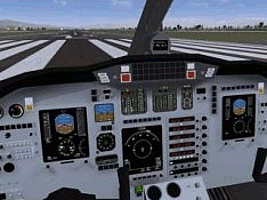
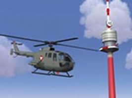
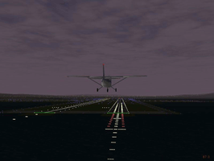
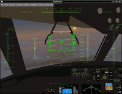
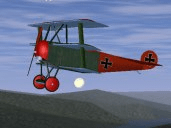
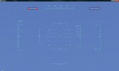

FlightGear
Dieser Artikel wurde für die folgenden Ubuntu-Versionen getestet:
Ubuntu 16.04 Xenial Xerus
Zum Verständnis dieses Artikels sind folgende Seiten hilfreich:
FlightGear  ist der wahrscheinlich umfangreichste quelloffene Flugsimulator (Open Source) und überzeugt mit realistischen Flugeigenschaften und originalgetreu nachgebildeten Flugzeugmodellen. FlightGear ist für Linux und einige andere Betriebbssysteme kostenlos erhältlich. Als ernstzunehmende Alternative zu Microsoft Flight Simulator oder X-Plane kann man FlightGear genauso, über das Grundmodell hinaus, mit zusätzlichen Erweiterungen ausstatten. Eine grosse Anzahl von Flugzeugen, Hubschraubern, Flughäfen oder Landschaftsmodellen mit Nachbildungen von echten Städten können dadurch im Spiel verfügbar werden.
ist der wahrscheinlich umfangreichste quelloffene Flugsimulator (Open Source) und überzeugt mit realistischen Flugeigenschaften und originalgetreu nachgebildeten Flugzeugmodellen. FlightGear ist für Linux und einige andere Betriebbssysteme kostenlos erhältlich. Als ernstzunehmende Alternative zu Microsoft Flight Simulator oder X-Plane kann man FlightGear genauso, über das Grundmodell hinaus, mit zusätzlichen Erweiterungen ausstatten. Eine grosse Anzahl von Flugzeugen, Hubschraubern, Flughäfen oder Landschaftsmodellen mit Nachbildungen von echten Städten können dadurch im Spiel verfügbar werden.
Auf uns Menschen übt das Fliegen von jeher eine große Faszination aus. Dies kann durchaus mit dieser Simulationssoftware erlebt werden.
|  |  |  |
| Im Cockpit | Hubschrauber-Flug | Landung nach Nachtflug |
Installation¶
Paketquellen¶
FlightGear ist in den Paketquellen enthalten und lässt sich über das folgende Paket installieren [1]:
flightgear (universe)
 mit apturl
mit apturl
Paketliste zum Kopieren:
sudo apt-get install flightgear
sudo aptitude install flightgear
Die Programm-Version aus den Paketquellen unterscheidet sich in den verschiedenen Ubuntuversionen, sowohl vom Umfang, als auch von den Möglichkeiten.
Starten des Spiels¶
Steuerung über Maus und Tastatur¶
Über "Anwendungen -> Spiele -> FlightGear" oder über den Befehl fgfs [2] startet man das Spiel.
Hinweis:
Möglicherweise kann es sinnvoll sein, die Zeigergeschwindigkeit der Maus etwas herabzusetzen, um deren Empfindlichkeit zu verringern, damit die Flugsteuerung etwas sensibler reagiert.
Steuerung über den Joystick¶
Möchte man FlightGear mit einem Joystick spielen kann man den Befehl fgjs verwenden [2]. Hilfe zur Konfiguration findet man auf der Projektseite .
Bedienung¶
Falls man nichts anderes ausgewählt hat, sitzt man nun in einer Cessna 172-P 'Skyhawk' auf dem San Francisco International Airport (KFCO) und befindet sich auf der Startbahn. Manchmal läuft sogar schon der Motor. Die kleine Cessna ist gut für den Erst- und weitere Übungsflüge geeignet.
Möchte man später irgendwann ein anderes Flugzeug fliegen, so kann man sich zunächst mit [3]
fgfs --show-aircraft
eine Liste der Namen aller bereits in der Grundausstattung verfügbaren Flugzeuge anzeigen lassen.
Anschließend kann man das Programm durch
fgfs --aircraft="Name des Flugzeugs" z.B. fgfs --aircraft="ufo"
mit dem Flugzeug der eigenen Wahl starten.
Ähnlich verhält es sich mit der Auswahl eines anderen Flughafens:
fgfs --airport=ID z.B. fgfs --airport=KFCO
Einfacher ist es jedoch, den Flughafen im Spielmenü festzulegen. Dort kann man auch das Tageslicht des Fluges bestimmen.
Die wichtigsten Terminal-Befehle kann man sich über
fgfs --help
und noch ausführlicher mit
fgfs --help --verbose
aufrufen. Eine Gesamtübersicht findet man bei Links.
Wenn man mit einem Joystick spielt, so muss man natürlich den Befehl anpassen.
|  |
| Cockpit |
Ein Flugzeug fliegen¶
Vorab lässt sich sagen, dass das Fliegen (allem voran Start und Landung) ein wenig Übung erfordert und FlightGear schon recht komplex ist. Auch die Tastenkombinationen sind reichhaltig vorhanden. Dadurch sollte man sich jedoch nicht gleich entmutigen lassen. Hat man erst die Anfangshürden überwunden, bekommt man eine Menge Spaß geboten.
Zwei ausführliche Bedienungsanleitungen findet man auf der FlightGear-Website: A Basic Flight-Simulator Tutorial und A Cross Country Flight Tutorial . Eine kurze Anleitung aus dem Jahr 2005 findet man auf pro-linux.de  . In ihr wird das Prinzip gut erklärt, lediglich die Beschreibungen der Tastenfunktionen sind dort natürlich nicht mehr ganz aktuell.
. In ihr wird das Prinzip gut erklärt, lediglich die Beschreibungen der Tastenfunktionen sind dort natürlich nicht mehr ganz aktuell.
Zur Steuerung des Flugzeuges lässt sich noch anmerken, dass man möglichst kleine Steuerbewegungen machen sollte. Evtl. sollte man auch die Mauszeigergeschwindigkeit, z.B. vor Beginn des Spiels, etwas zurückzunehmen. Exakter regulieren kann man die Steuerung eher mit der Maus, als mit der Tastatur. Und richtig interessant wird es natürlich mit einem Joystick.
Hinweis:
Die Hilfe-Funktion im Programm bietet auch interaktive Mini-Tutorials an, die unter "Help -> Start Tutorial" zu erreichen sind:
Bei der Cessna: Ein geführter Start- und Flugunterricht - ähnlich einer realen Flugstunde.
Bei der A-10: Wird der Start der Triebwerke ausführlich erklärt.
Die Grund-Tastenfunktionen kann man jederzeit im Programm, über die "Hilfe"-Funktion ansehen.
Übersicht der wichtigsten Funktionstasten mit Erklärungen¶
| Steuerung | ||
| Taste | Steuerelement | bewirkt |
| ⇧ + B | Feststellbremse | verhindert das Wegrollen, wenn die Motoren gestartet sind |
| . | rechte Rad-Bremse | Flugzeug rollt am Boden nach rechts, Differentialbremse-priorisiert |
| , | linke Rad-Bremse | Flugzeug rollt am Boden nach links, auch priorisiert |
| G | Fahrgestell | einklappen bzw. ausklappen (* s.u.) |
| S | Motoren/Triebwerke starten | Modell- und Antriebsabhängig, bei mehreren Motoren teilweise auch mit !@#$ sogar getrennt möglich |
| Bild ↑ | Drehzahl erhöhen | Schubkraft wird erhöht, z.B. max. für den Start |
| Bild ↓ | Drehzahl senken | Schubkraft senken, z.B. beim Reiseflug |
| ↑ | Steuerhorn (Maus) nach vorne drücken | Flugzeug senkt die Nase (sinken), Höhenruder |
| ↓ | Steuerhorn (Maus) ranziehen | Flugzeug nimmt die Nase hoch (steigen), auch Höhenruder |
| → | Steuerhorn nach rechts | Flugzeug rollt nach rechts. Querruder rechts |
| ← | Steuerhorn nach links | Flugzeug rollt nach links, Querruder links |
| 0 | rechtes Pedal | Seitenruder nach rechts |
| ⏎ | linkes Pedal | Seitenruder nach links (siehe auch Flugmanöver – Wie?) |
| V | Perspektive | Ändern der Ansichtsperspektive * |
| X | Einzoomen | Auszoomen * |
| Mausmodi | Effekt | 1.Modus normale PC Kontrolle, 2.Modus Flugsteuerung, 3.Modus Verschiebung der Perspektive |
 | Änderung der Mausfunktion | Schaltet zwischen 3 Zuständen: Normal (sichtbarer Mauscursor), Simulatorkontrolle - Höhen- und Seitenruder via Mauskontrolle (Cursor=kl.Kreuz), Visuelle Kontrolle der perspektivischen Sicht (Cursor=Auswahlsymbol <=>) |
| H | Head-Up-Display (HUD) | die wichtigsten Instrumenteninformationen werden in die Scheibe der Pilotenkanzel gespiegelt. Eine Erklärung, welche Kontrollinstrumente sich wo befinden gibt es im Flightgear-Wiki. |
| ⇧ + I | Head-Up-Display | HUD-Alternativen, z.B. minimal |
| Strg + C | Cockpit-Instrumente | Alle verfügbaren Bedienelemente der Pilotenkanzel werden markant hervorgehoben - "Pilot's view – Pilotenblick" |
| Strg + U | Magic | "1.000 feet up" (s.a. FAQ 5.8) |
| P | Pause | Das Spiel pausieren und zu einem späteren Zeitpunkt fortführen |
| ⇧ + Esc | reset | Spiel zurücksetzen, z.B. nach Fehlstart des Fliegers, als Anfänger |
| Esc | exit | Spiel beenden, mit Bestätigung |
| * | Alle mit * markierten Funktionen werden mit der ⇧ invertiert | |
Die Tastenfunktionen lassen sich 6 Kategorien zuordnen: Rudersteuerung, Motorensteuerung, Blickrichtungen, Bildschirmoptionen, Autopilot + zugehörige Befehle, sowie andere Keyboard-Funktionen.
Eine weitere kleine Hilfe zu den Tastenfunktionen gibt es unter Tipps und Problemlösungen an erster Stelle.
|  |
Fokker Dr.1  |
Erweiterungen¶
Eine besondere Stärke guter Flugsimulatoren ist die großartige Arbeit der Community, die zahlreiche Erweiterungen bereitstellt. Dies trifft auch auf FlightGear zu, so kann man zusätzlich viele Flugzeuge fliegen und nahezu die gesamte Welt virtuell bereisen.
Zusätzliche Flugzeugmodelle¶
Neue Flugzeugmodelle kann man sich auf der Webseite ansehen und auswählen. Es gibt dort Modelle, die sich im Alpha-, Beta- und frühen Entwicklungsstadium befinden. Dies ist dort vermerkt. Sie können dennoch durchaus flugfähig und interessant sein. Der höchste Entwicklungsstand wird als 'produktiv' bezeichnet. Manche Modelle funktionieren auch erst mit der aktuellsten Spiele-Version (2.0). Dies ist rasch in der Übersichtstabelle zu erkennen. Die Archive braucht man nur zu entpacken [4] und kopiert sie mit Root-Rechten [5] in den Ordner /usr/share/games/flightgear/Aircraft/.
Hinweis:
Kurz sei auch darauf hingewiesen, dass historische Militärmaschinen, wie z.B. die Messerschmidt BF-109, im Programm nicht mit Waffen bestückt sind. Es geht hier doch in erster Linie darum, die Flugeigenschaften von historischen Flugzeugen nachvollziehen zu können, die man im realen Leben selten bis kaum fliegen können wird. Es gibt in der Basisausstattung auch ein UFO, das unberührt von Gravitationskräften über erstaunliche Flugfähigkeit verfügt. Ein Geheimtipp ist Beispielsweise die Dornier Do X von 1928 mit 12 Motoren. Sie ist nicht in der Grundausstattung enthalten, lässt sich jedoch leicht nachrüsten.
Zusätzliche Landschaften - Neue Modelle der Welt¶
In der Starter-Version von FlightGear ist nur ein kleiner Ausschnitt der Erdoberfläche enthalten. Es ist das Gebiet, rund um San Francisco (130° westlicher Länge, 30° nördlicher Breite) mit der weltbekannten Bucht und der Golden Gate Bridge. Auf der Webseite des Projektes kann man sich weitere Gebiete einzeln aus einer Weltkarte aussuchen und herunterladen und so seine Flugwelt vergrößern. Es ist auch möglich, alle verfügbaren Gebiete herunterzuladen (13GB).
Anschließend muss man diese entpacken und mit Root-Rechten [5] in die Ordner /usr/share/games/flightgear/Scenery/ kopieren. Es sind die Unterordner Airport, Objects, Terrain.
Hinweis:
Bei Airports muss man etwas mehr Sorgfalt walten lassen, da der ICAO-Code in einer logischen Vierer-Sequenz gepackt ist.
Bei WorldAeroData by country kann man später diesen ICAO-Code bequem nachsehen.
Die Landschaften selbst sind fast originalgetreu gestaltet. So finden sich an etlichen Orten bekannte Sehenswürdigkeiten wieder, auch Gebirge und die Flughafengebäude wurden gut nachgebildet. Einige Videolinks aus dem Channel am Ende des Artikels ermöglichen, dies vorab zu sehen.
Achtung!
Diese Modelle der Landschaft können, insbesondere in dicht besiedelten Gebieten, durchaus jeweils 100 - 200 MB groß sein.
Es dürfte also kein all zu großes Problem sein, mit etwas Phantasie, Geographiekenntnissen und Wikipedia, z.B. die Malediven, die Antillen und andere wunderschöne Orte dieser Erde zu "befliegen".
Grafische Startoberflächen¶
FlightGear Launch Control¶
FlightGear Launch Control ist eine umfangreiche grafische Oberfläche, um - ohne die Kommandozeile zu benutzen - das gewünschte Flugzeug, den gewünschten Startflughafen, die Wetterbedingungen sowie weitere Details einzustellen. Es ist ab Ubuntu 12.04 in den offiziellen Ubuntu-Paketquellen enthalten.
fgrun (universe)
mit apturl
Paketliste zum Kopieren:
sudo apt-get install fgrun
sudo aptitude install fgrun
Wer FlightGear mit Windows benutzt hat, wird es kennen, da es dort zum Paketumfang gehört.
Es gibt mittlerweile auch einen zweiten Programmstarter, der mit der Programmiersprache Python erstellt wurde
Der Artikel Spiele/FlightGear/StartOberfläche bietet weitere Einblicke und Bilder zu diesem Thema...
Tipps und Problemlösungen¶
Anleitungen¶
Bei der Installation werden einige Gebrauchshilfen auf dem PC mit installiert. Eine Übersicht erhält man durch Eingabe von
"file:///usr/share/games/flightgear/Docs/index.html" im Internet-Browser der eigenen Wahl.
Etwas gesunder Forscherdrang tut hier gut, bevor man in die Luft geht - nicht zuletzt auch, damit man wieder sicher auf den Boden zurückkommt. Selbst das UserManual.pdf findet man dort. Es ist somit alles an Bord, was man für einen guten Flug braucht.
ATI¶
Für Nutzer vieler ATI-Grafikkarten bildet sich zuerst ein gravierendes Treiberproblem in Form eines Grafikfehlers ab. So sieht man das Flugzeug und die Landschaft nicht. Auch die obere Menüleiste ist leer, funktioniert aber trotzdem.
Abhilfe schafft man, indem man in der Menüleiste das zweite Drop-Down-Menü von rechts an- und dann den vierten Punkt von oben auswählt. Hier entfernt man das Häkchen bei "Use Point Sprites für Runway Lights" und schon sollte man die komplette Landschaft wieder sehen. (s.a. Forum, Fehlerbericht 231734 ) und Abschnitt Problembehebung/Troubleshooting problems im Wiki des Projekts. Dort wird beschrieben, wie der Fehler behoben werden kann, bevor das Spiel gestartet wird.
Desktop-Effekte¶
Generell lässt sich sagen, dass Compiz und KWIN keine Schwierigkeiten bereiten, die Ansprechgeschwindigkeit bei deaktivierten Desktopeffekten jedoch besser ist.
Ortsbestimmung¶
|  |
| Längen-+Breitengrad im HUD |
Möchte man während des Fluges wissen, in welchem Ort der Erde man sich gerade befindet, so ist dies mit FlightGear und Online-Karten-Diensten wie OpenStreetMap oder Google Maps problemlos möglich.
Um sich die Koordinaten anzeigen zu lassen, muss man zuerst das Head-Up-Display mittels der Taste
H aktivieren. Die Koordinaten findet man dort (s. Bild). Links stehen die Werte für die geographische Breite, rechts die für die geographische Länge.
Die Zahlen gibt man dann, durch ein Komma getrennt, in die oben genannten Kartendienste ein. Sollte einer der Werte oder beide ein Minus enthalten, so muss dieses auch mit eingegeben werden. Die Buchstaben am Ende müssen hingegen nicht übernommen werden.
Aus dem Beispiel im Bild wird dann also ein 37.36488, -122.21261. So erfährt man hier, dass man gerade bei San Francisco unterwegs ist.

Infobox¶
| FlightGear | |
| Genre: | Flugsimulator |
| Sprache: |     |
| Veröffentlichung: | 1997 |
| Systemvoraussetzungen: | Dual/Quad-Core Prozessor mind. 2-3 GHz/Kern - OpenGL2.1-fähige Grafikkarte mit >512MB Grafikspeicher - 2 GB freier Festplattenspeicher System Requirements/Hardware-Empfehlungen |
| Medien: | Download oder Kauf-DVD (3-4 Stk. inkl. Landschaften) |
| Multiplayerfähig: | x - Linux only |
| Läuft mit: | Multisystem |
| Versions-Historie | Changelogs/Versions-Historie |
| Bugs @ Launchpad | Übersicht der gemeldeten Fehler für Ubuntu, alle Versionen |
| Bugs @ Debian | Fehlerberichte bei Debian, unstable, alle Zustände |
| Bugs @ FlightGear | Fehlerberichte, projektbezogen zur neuesten Version |
| Lizenz | GNU - GPL 2 |
Links¶
Projektseite
Wikipedia
Tutorials
Einführung auf pro-linux.de 01/2005
FlightGear 2.6 - perfomanter & realistischer pro-linux.de 02/2012
Foren & IRC-Channel
Videos
- Erstellt mit Inyoka
-
 2004 – 2017 ubuntuusers.de • Einige Rechte vorbehalten
2004 – 2017 ubuntuusers.de • Einige Rechte vorbehalten
Lizenz • Kontakt • Datenschutz • Impressum • Serverstatus -
Serverhousing gespendet von